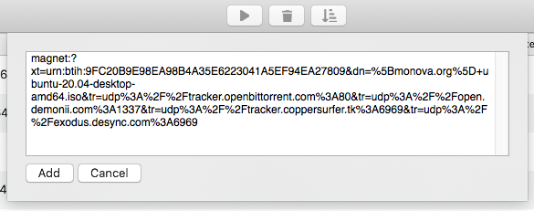
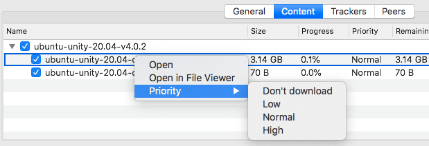
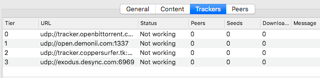

Torrenter
An open-source GUI-based macOS
BitTorrent client
, which lets you be in charge!
Download v0.2.0
Documentation
GitHub
Add Torrent from File or Magnet URI.

Control Every Torrent Individually.
See All About a Torrent at a Glance.

Manage Content of Torrent the Way You Want.
Track the Trackers!

Monitor the Peers.